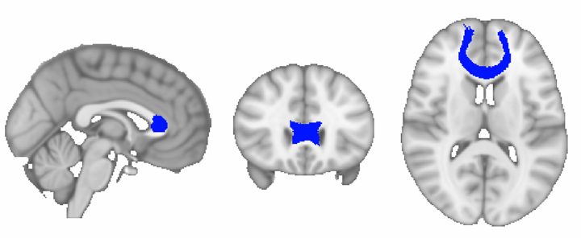
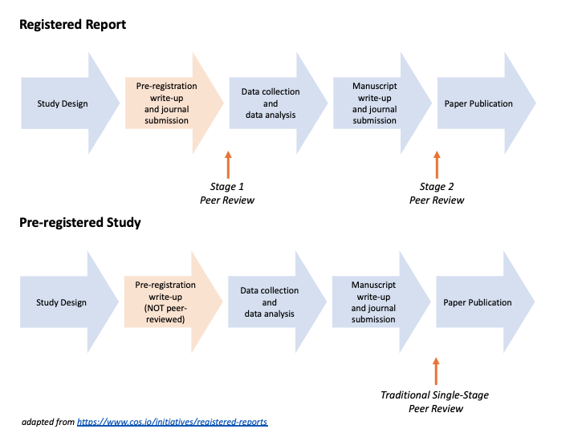

Alberto LazariWellcome Centre for Integrative Neuroimaging, FMRIB, Nuffield Department of Clinical Neurosciences, University of Oxford Pre-registration has the potential to change how neuroscience research is performed. Its benefits may be hotly debated, but if you’re reading this post you’re probably at least curious about when pre-registration may be a good idea. Here, I’m going to share 10 tips that I wish I had known at the beginning of my journey into pre-registration. I won’t go into depth about the benefits of pre-registration and the various debates about it, which have been covered elsewhere. For all the talk about pre-registration in the research community, pre-registered studies are still relatively rare. A preprint by Hardwicke et al. estimates that 5% of psychology studies are pre-registered, and the percentage is probably even lower in neuroimaging (although see this preprint for a more optimistic outlook). The low uptake of pre-registration in neuroimaging may be partially because it can feel daunting to pre-register a study for the first time, especially in a field where previous examples are hard to come by. In the spirit of open science, in this post I will share some tips and tricks from the perspective of an early-career researcher who finished their first pre-registered study while knowing little about pre-registration, and open science in general. I’ve summarised these tips and tricks in 10 points: 1. Check out existing guidelines and online templates for pre-registration. When I first pre-registered my study (at the end of 2017), I could count the number of published pre-registered studies I knew on my fingertips. Now… well, pre-registration is still pretty uncommon in neuroimaging. But there are more and more examples in psychology that will give you a good start on how to preregister behavioural analyses. Neuroimaging-specific templates are hard to come by, but there is a pretty extensive one here: https://osf.io/6juft/. Beyond templates, you can refer to best-practices guidelines on neuroimaging, (e.g. COBIDAS guidelines, or this JNeuro piece), or papers on methodological reporting (e.g., Carp 2012). There are also some very useful resources linked in this write up of a SIPS meeting. 2. Be aware of neuroimaging-specific decisions in your analysis. Reading pre-registration examples from other research fields can be useful for inspiration, but neuroimaging has its own very specific issues, especially when it comes to analytic choices. Just to give a few examples of things that are important to define but that you might not find in a generic psychology pre-registration:
For a longer list, you can also take a look at the COBIDAS report (Appendix D) and the items they list as necessary to ensure a reproducible neuroimaging analysis. In my mind, the answer to these questions can dramatically alter the results of a study. And yet, I did not really tackle them sufficiently in my first pre-registration, which I wish I had done. It is of course up to each individual researcher how much of their study they want to preregister – there are no fixed rules about it. But if you’ve already made some analytic decisions at the time of your pre-registration, then it makes sense to specify those details up front. 3. You can pre-register code and files (such as neuroanatomical masks). A single line of code can be worth a thousand words. When pre-registering an analysis, it can be extremely useful to upload your code somewhere (e.g., GitHub) before running the analyses. It can take a little time to get your code in a format that you are comfortable sharing it, but this will remove all doubts about how exactly your analyses will be performed (e.g., what flags will you use for motion correction? How much will you smooth and at which stage of your analysis?). Similarly, you can also pre-register files, for example neuroanatomical masks. As mentioned, the choice of masks can alter your results, and an easy way to avoid bias and reduce researcher degrees of freedom is to pick a mask a priori. If you pre-register in OSF, you can even add the 3D NIFTI files of your masks to your pre-registration web page.  Example of a tractography-based white matter mask, which can be pre-registered as a file on OSF. 4. Power, power, power… Power analyses in neuroimaging can get extremely complicated – and controversial. Our field is always grappling with the issue of sample size (see Szucs and Ioannidis 2020 for a discussion), and there is growing pressure to include more and more participants in our studies to address low power in our method. In particular, there is a current controversy about the fact that in large datasets (like HCP or UK Biobank), most associations have small effect sizes and can be robustly detected only with a high number of subjects (usually in the 1k-10k range). However, these associations often use coarse behavioural/demographic variables and limited types of MRI acquisitions, which means they might be overestimating the number of subjects needed in comparison to studies using more sensitive measures. Like many others, I also have grown more skeptical of studies using 20–30 subjects for brain-behaviour correlations. That said, I am also skeptical of sweeping statements that cross-sectional MRI analyses always need 1000s of subjects. However you may feel about this controversy, it is important that you thoroughly justify your sample size in your pre-registration. Strategies for sample size justification have been covered at length here: https://psyarxiv.com/9d3yf/. If you wish to run a power analysis for neuroimaging, there are a couple of tools and resources available (like NeuroPowerTools and BrainPower), although these are mostly designed for fMRI.  Example of a power analysis. 5. You can add to a pre-registration over time. When most people (including myself) think about pre-registration, we think about something you do once at the beginning of the study and never touch again. This is a total misconception – one can definitely pre-register more and more analytic choices as the project develops (see Chambers and Tzavella, 2021, for a more general discussion about “variants” to the registered report, and by extensions pre-registration, format). Why am I stressing this here? There is one important reason why multi-step pre-registrations are particularly useful in neuroimaging – namely, that preprocessing and analysis pipelines often need to be tailored to individual datasets. Two chief examples of this are independent component-based denoising of fMRI data, and motion correction of DWI data. In the first example, independent component-based classifiers that work well on one dataset may not work as well on another one. In the second example, you might want to have more aggressive motion correction depending on the amount of motion in your sample. Either way, these are all factors that are difficult to predict a priori. Therefore, it can be very appealing to create the main pre-registration before collecting the dataset – and then add a small, separate pre-registration for your preprocessing parameters, after trialing them on a subset of subjects. Finally, sometimes having some pilot data is the only way that you can test whether your code works as expected. Code tests can also be run on simulated data – but while that’s easy to do for behavioural data, simulations of neuroimaging data are still in their infancy. Plus, having a few ‘real-life’ datasets can help you refine and consolidate your quality-control procedures for the study. Therefore, if you are keen to pre-register your code, testing it on a subset of pilot participants can provide a good sanity check. 6. Exploratory analyses are your friends, not your enemies. How many hypotheses is it useful to cover in a pre-registration? We often have lots of hypotheses that would be sensible to test in a given dataset, so it is tempting to pre-register a huge volume of hypotheses at the beginning, to get a sense of security that all of our interests will be covered in our primary/confirmatory analyses. However, this instinct is slightly misguided: having too many hypotheses that are loosely linked can make it difficult to write up the results in a single paper. For example, if you have too many hypotheses, and you have a combination of positive and negative results, it can easily get too complicated to explain it all in a single paper. If you are tempted to pre-register huge volumes of hypotheses (as I often am), there are two alternatives that are worth keeping in mind. First, you can always explore your data beyond the original hypotheses (exploratory analyses are not ‘second class’ analyses), and you can also pre-register more hypotheses later on, in a separate follow-up preregistration. Second, even within your main preregistration, you can make a distinction between primary vs secondary hypotheses (analogous to primary and secondary outcomes that are used in clinical trial registrations). In short, less is more: keep the pre-registration as simple and specific as you can. 7. Strike a balance in the number of analyses that you propose. On top of the number of hypotheses you propose, it is also worth keeping an eye on the number of analyses you put forward in your pre-registration. This can become an issue especially in cases where you want to look at the results under multiple analytic conditions, which is fairly common in neuroimaging. For instance, a big issue is that the consensus on neuroimaging preprocessing can change fairly quickly, sometimes even in just a few years. Therefore, if you decide to run a replication study, this puts you in a position where you might want to pre-register two analytic pathways – one closely mirroring the paper you are replicating, and one following the current gold standard of the field. That said, going down this route could make the number of ‘forking paths’ you pre-register exponential. For example, let’s say you want to evaluate 3 different ways of binning a behavioural variable and 3 ways of setting up the group-level statistical models – that will already generate 9 paths to pre-register and 9 results to report. My instinct is that usually it is best not to pre-register more than two different ways of doing a specific analytic step, and reserve this only for particularly contentious analytic steps. See also Point 5 above: You can add to your registration as your plans evolve. In the future, things might look different. There are some really exciting tools coming up to explore these forking paths in a rigorous way (e.g., Specification Curve Analysis). But to my knowledge, these have rarely been adapted and applied to neuroimaging (outside of rare technical papers like this one, which are still very informative). 8. Set aside time for pre-registering before (or during) data collection. A good pre-registration takes time. In my first pre-registered study, it took nearly a month for a small multidisciplinary group of five people to agree on the exact preregistration of a study that was mostly replication-based. I would expect that a single-discipline pre-registration might take less time to develop. But with a bigger team and with a study that is not replication-based, it could easily take a couple of months to reach consensus on a good-quality pre-registration. But that is a good thing! The time spent here will be rewarded when you are undertaking and reporting your analysis. The general wisdom is that, if you are collecting data as part of a pre-registration, you should upload your pre-registration before collecting the data. However, I think there is a trade-off here. In some studies data collection is time sensitive (for example a unique clinical presentation, or issues around resource availability). In these cases I think it’s better to start data collection when you need to, and take more time to carefully develop your pre-registration plan. It would be a shame to rush the pre-registration and miss important opportunities to refine the plans with collaborators simply so you include the statement “data collection has not been started”. It is absolutely fine to pre-register once you have started (or even finished!) data collection, as long as you are explicit about it. That said, this might not be the best way to do it if you are going the formal registered reports route (see Point 9 below), where reviewers might impose conditions which would be hard or impossible to achieve once data collection has already started. 9. Consider publishing options from the get-go: Pre-registered study or Registered Report? I think most early career researchers focus first on doing the work, then the publication comes as an after-thought. There are, however, strategic and practical considerations around publication that your collaborators or supervisors may highlight early on. Often they may already know which journal they are hoping to send the work to before the project has started. If you want to go down the pre-registration route, you too should be thinking about what journals are currently welcoming to the format, or where there might be more push-back. One method might be to look at the journals your team frequently publishes in, then search their archives for terms like “pre-registration” and “OSF”. If your teams’ favorite journals are familiar with this format, you’ll be well placed to introduce this as a new venture in this work. If, however, there is little to no precedent in your specific field of interest, then it might be an uphill battle. Another important consideration is whether you have the time, resources and support to attempt a full registered report (where the pre-registration is peer-reviewed and published in a journal) rather than a “simple” pre-registration (for a list of participating journals, see here: https://www.cos.io/initiatives/registered-reports).  Adapted from: https://www.cos.io/initiatives/registered-reports. There are pros and cons to each format. Once you submit a registered report, you are limited in what the main story about the data will be. Of course, you can add exploratory analyses, but let’s say you end up wanting to merge the pre-registered paper with another paper, in order to tell a more complete or broader story – you cannot easily do that as part of a Register Report format. On the other hand, registered reports have big advantages when it comes to publishing negative results. Any researcher will tell you that it is really, really hard to publish negative results. What I noticed is also something a bit more nuanced – publishing something where not all results are positive is equally difficult. In my recent paper, I found 1 out of 3 hypotheses to be supported from my pre-registered study – and yet, I still encountered criticism regarding the presence of negative results during the publishing process. Doing a registered report shields you from this, as the acceptance of the manuscript does not depend on all (or any!) of your results being positive. 10. Learn more about pre-registration and the literature on it. This final point is not about how you run a pre-registration, but it is practical advice for anyone interested in running pre-registrations as part of their research. The truth is that many scientists still don’t know what pre-registration is or why it may be useful (even in neuroimaging). At conferences and symposia, you will often need to be able to persuade people in 60 seconds that pre-registration was worth the hassle for your specific study. So, if you plan on presenting pre-registered results anywhere, It is really important to learn to communicate effectively about pre-registration, and perhaps even to advocate for its use. In my experience, the idea of pre-registration (or even just promoting the use of pre-registration) does make some people slightly anxious – sometimes for good reasons, but other times due to misconceptions on the topic. For example, some people worry that promoting pre-registration will lead to the next generation of scientists being less exploratory and innovative in their approach to science. It is hard to tell right now whether this will be the case – but I find it unlikely, and I think this argument is borne out of the misconception that pre-registration and exploratory analyses are mutually exclusive, rather than synergistic. Indeed recent analysis has suggested that registered reports are indistinguishable from traditional formats in terms of rated creativity and novelty of the work, while being rated as superior than traditional formats in methodological rigor, analysis and overall quality (Soderberg et al, 2021). You are sure to hear other arguments against pre-registration, but this should not discourage you. In my experience pre-registration does not affect how people perceive your results for the worse, and it can change it for the better, by increasing your and others’ confidence in the results. But if a conversation about the value of preregistration arises, be ready to try and get people on board with the idea. This is not meant to be a comprehensive list, but rather a collection of the top tips I would pass on to others interested in doing a pre-registration. It is also not meant to be a list of rules — approaches to pre-registration rightly vary quite a lot depending on the type of study. If you want to take a look at an example of a pre-registration and its resulting paper, you can find mine here: Preregistration: https://osf.io/ar7zs/ Paper: https://www.sciencedirect.com/science/article/pii/S0010945221003166 I hope that these tips will somewhat demystify the pre-registration process, and that they will help make life easier for people (especially early-career researchers) interested in pre-registering their neuroimaging studies. CRediT Authorship Statement:
Conceptualization, Writing - Original Draft: Alberto Lazari Supervision, Project Administration: Alberto Lazari, Cassandra Gould van Praag, Heidi Johansen-Berg Writing - Review and Editing: Alberto Lazari, Cassandra Gould van Praag, Heidi Johansen-Berg, Ioana Grigoras, Caroline Nettekoven, Sandra Tamm, Hanna Willis
0 Comments
Your comment will be posted after it is approved.
Leave a Reply. |
BLOG HOME
Archives
October 2022
|
 RSS Feed
RSS Feed